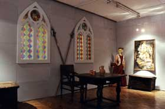

ZELINGRAD KROZ POVIJEST
1295.
Ivan, sin palatina Dionizija (koji je nekada bio i veliki župan moravečki) daruje zemlju Nespeš Pavlu i sinu njegova brata Fabijanu za njihova vjerna služenja. Međaši zemlje Nespeš su, među ostalima, ljudi iz Drenove, ljudi iz Psarjeva Gornjeg i Psarjeva Donjeg te knez Pavao Čurkan, « comite castellano de Zelina». Prvi spomen Zelingrada.
1326.
Kralj Karlo za zasluge daruje magistru Nikoli Ludbreškom sve kmetove i sve zemlje kastruma koje se nalaze u Glavnici i Moravču. Među ostalima posjedima kralj Karlo daruje magistru Nikoli i kastrum Zelingrad.
1397.
Fabijan Bičkele, pristaša kralja Sigismunda je vlasnik Zelingrada.
1398.
 Magistar Fabijan Bičkele, vlasnik grada Zeline izjavljuje pred Zagrebačkim kaptolom da poziva sve ljude slobodnog staleža neka se nasele na pustim mjestima njegova posjeda koji se nalazi uz rijeku Zelinu, a s gornje strane Četvrtkovca. Svima koji se nasele daje slobodu od dvadeset godina te ih u tom roku neće tražiti ništa drugo osim triju službi i kraljevskih poreza i daća. Nakon proteka 20 godina nasljednici će sačuvati istu slobodu kao njegov Četvrtkovec i ljudi koji u njemu borave.
Magistar Fabijan Bičkele, vlasnik grada Zeline izjavljuje pred Zagrebačkim kaptolom da poziva sve ljude slobodnog staleža neka se nasele na pustim mjestima njegova posjeda koji se nalazi uz rijeku Zelinu, a s gornje strane Četvrtkovca. Svima koji se nasele daje slobodu od dvadeset godina te ih u tom roku neće tražiti ništa drugo osim triju službi i kraljevskih poreza i daća. Nakon proteka 20 godina nasljednici će sačuvati istu slobodu kao njegov Četvrtkovec i ljudi koji u njemu borave.
1415.
(ili početak 1416.) Zelingrad je teško stradao u požaru. Grad je u vlasništvu obitelji Bičkele, a nakon požara se obnavlja.
1460.
Vlasnici Zelingrada: Ladislav, Ivan i Pavao Bičkele izvršili su pljačku na posjedu Benediktova sina u Glavnici. Vino su oteli, a kuću uništili. Zapis o izvršenoj pljački sastavio je Ivan Ade od Svetog Duha, župan Zagrebačke županije.
1472.
U Zagrebu kod "pisanog mosta" izbio je oružani sukob između Stjepana Bičkelea od Zelingrada i ljudi zagrebačkog biskupa. Tom prilikom Stjepan Bičkele teško je stradao te se od te godine više ne spominje
1490.
U Zelingrad su noću ušli vojnici kralja Maksimilijana Habsburškog te je u borbi s njima Ladislav Bičkele bio ubijen. Većina ljudi u Zelingradu je pobijena, grad je opljačkan i djelomično spaljen. Nakon smrti Ladislava Bičkelea kralj Vladislav II. daje Zelingrad u vlasništvo obitelji Zapolja.
1494.
Vlasnik Zelingrada je Stjepan Zapolja.
1499.
Nakon smrti Stjepana grad nasljeđuje njegov sin Ivan Zapolja.
1531.
Ivan Zapolja, protukralj Ferdinanda Habsburškog daruje Zelingrad Petru Palffyju, nećaku zagrebačkog biskupa Šimuna Erdödyja.
1534.
Ivan Kaštelanović prosvjeduje pred Zagrebačkim kaptolom protiv uvođenja Petra Erdödyja u posjed grada Zeline. Kaštelanović je smatrao da on ima pravo na grad Zelinu budući mu ga je obećao kralj Ferdinand Habsburški.
1535.
Pred Zagrebačkim kaptolom zagrebački biskup Šimun, Petar Palffy od Zeline i Ivan Tompa od Erdeda prodaju kastrum Zelinu za 3 500 zlatnih forinti bivšem podbanu Pavlu Kerečeniju od Kanyafölde i njegovim sinovima Mihajlu, Ladislavu, Andriji, Ljudevitu, Ivanu i Matiji. Izvršeno je utvrđivanje Zelingrada kojom prilikom je ugrađen kamen sa zapisom kaštelana Georgiusa Kerhena.
1545.
Na Zelingradu se pohranjuju spisi Čazmanskog kaptola
1635.
Zelingrad se prvi put spominje kao ruševina, «in diruto castro Zelina».
1640.
Vlasnik Zelingrada Kerečenji oporučno ostavlja utvrđeni grad Zelinu, odnosno njegove ruševine, Tomi Mikuluću i Gabrijelu Crnkoviću.

VLASNICI ZELINGRADA
Ivan, sin palatina Dionizija, de genere Pecz – na Zelingradu se spominje kaštelan Čurkan (1295. godine)
Nikola Ludbreški – nećak palatina Dionizija (1326. godine)
Fabijan Bičkele (Byczkele) (1397. godine)
Ladislav, Ivan, Pavao Bičkele (Byczkele) (1460. godine)
Stjepan Zapolja (Zapolya) (1494. godine)
Ivan Zapolja (Zapolya) (1499. godine)
Ivan Kaštelanović (Kastellanfy) - polaže pravo na Zelingrad ali nikad nije ušao u posjed grada (1534. godine)
Petar Palffy – nećak zagrebačkog biskupa Šimuna Erdedija (Erdödy) (1534. godine)
Pavle Kerečenji od Kanyafölde (Kerecheny) (1535. godine)
Mihajlo i Ladislav Kerečenji (Kerecheny) (1537. godine)
Tomo Mikulić od Brokunjevca (1640. godine)
Gabrijel Crnković (Chernkoczy) (1640. godine)
Obitelj Fodrocy (1640. godine)
ISTRAŽIVANJA
PREGLED ISTRAŽIVANJA NA GRADU OD 1954-1981. GODINE
Pregledom dokumentacije koja se čuva u Muzeju Sveti Ivan Zelina, može se rekonstruirati opseg dosadašnjih radova na Zelingradu. 1954. god. – započinju sustavna istraživanja i vrši se prvo arhitektonsko i geodetsko snimanje grada. Na taj način su se fiksirale određene točke koje nam i danas služe kao polazište za utvrđivanje situacije kakva je bila prije početka istražnih i konzervatorskih radova.
1956. god. – istraživana je jugozapadna polukula i istočni dio grada s dijelovima sjeverne polukule. Tom je prilikom u sjevernoj polukuli pronađena kamena ploča s natpisom koji govori da je 1535. godine u vrijeme kaštelana Juraja Kerhena grad bio ponovno utvrđivan
Natpis na ploči glasi:
HOC OPUS FECIT FIERI EGREGIUS GEORGIUS KERHEN CASTELANUS ZELIN IN ANO 1535
1958. god. – prvi put su izvršeni konzervatorski radovi na nekom dijelu grada. Izvedeni su zaštitni radovi na zazidavanju sjeveroistočnog ziđa grada (palasa).
1961. god. – nastavljeno je zazidavanje zapadnog zida (njegov jugozapadni dio) te djelomično na jugozapadnoj polukuli. Te se godine radilo i na raščišćavanju unutarnjeg dvorišta grada. Tom prilikom je pronađena veća količina arheološkog materijala: kamena kugla, nož, željezna kugla (tane), veći broj ulomaka keramike, dio konjske potkove, dio pećnjaka sa zelenom glazurom i figurom golubice. U jugoistočnoj polukuli pronađen je ključ.
1962. god. – te je godine prilikom raščišćavanja u dvorištu pronađena «rupa kao bunar» obzidana klesanim kamenom, ovalnog oblika 180x150 cm a tada je očišćena do dubine od 1 m. U rupi su pronađeni klesani kameni blokovi, bez drugog arheološkog materijala. Na zapadnom zidu kod «rupe» pojavila se bolta. U neposrednoj blizini «rupe» pronađena je veća količina ulomaka keramike i čavala te jedan novčić.
1963-1975. god. – nije bilo zaštitnih radova niti raščišćavanja terena na gradu, samo se čistilo raslinje na i oko grada.
1974. god. – Restauratorski zavod Hrvatske izradio je program zaštite i revitalizacije grada, tada su izrađene i nove fotogrametrijske snimke grada koje i danas koristimo.
1976. god. – ponovno se krenulo u zaštitne radove na zidovima, tada se obnavljao vanjski plašt ulazne polukule i to samo najugroženiji dijelovi. Kako su radovi iz 1961. godine na zapadnom zidu bili loše izvedeni taj se dio zida urušio te se morao nanovo sazidati. Te se godine počelo i sa djelomičnom obnovom istočnog zida palasa.
1980. god. – te se godine na gradu provode opsežni radovi na konzervaciji zidova, radilo se na istočnom zidu palasa na koji je postavljena armirano betonska kapa – serklaž. Tada je sazidan i jugoistočni ugao palasa koji je bio u potpunosti urušen. To su bili zadnji građevinski radovi na Zelingradu do 2002. godine kada se ponovno krenulo u obnovu grada.
1981. god. – Restauratorski zavod Hrvatske izradio je elaborat o građevinskim radovima na Zelingradu u1980. godini, što je bio i zadnji opsežniji i stručniji prikaz istražnih i konzervatorskih radova na Zelingradu.
U ovom pregledu radova na Zelingradu se vide pokušaji obnove grada ali ne i problemi koji su pratili te radove, glavni problem koji je svugdje prisutan je svakako novac kojeg je bilo teško osigurati ali i osposobljenost izvođača tih radova. Iz pregleda se ne može vidjeti osposobljenost radnika za radove a to je za stručnu obradu nađenog materijala veliki nedostatak. Radove na Zelingradu u početku su vodili arheolozi amateri kojima je Zelingrad prirastao srcu ali koji nisu mogli i znali voditi relevantnu dokumentaciju niti obraditi nalaze prema stručnim kriterijima. Tako da se danas susrećemo s problemima lociranja mjesta istražnih radova (sondi) ali i s poteškoćama u obradi nalaza jer uz nalaze često nema podataka o mjestu, vremenu i načinu pronalaska materijala. I u konzervaciji zidova je bilo sličnih problema ali ne toliko s sposobnosti zidara da obnove neki dio zida već s nadzorom jer su stručnjaci Restauratorskog zavoda tek povremeno dolazili u kontrolu izvedenog. Danas su greške koje su tada napravljene još uočljivije ali nažalost zbog loše vođene dokumentacije danas ne znamo prvobitan izgled zidova tako da se greške više ne mogu ispraviti.
ARHEOLOŠKA ISTRAŽIVANJA 2001.GODINE
U 2001. godini započeli smo opsežnije arheološke radove, prve nakon nekoliko desetljeća, tijekom kojih je utvrđen položaj cisterne u unutarnjem dvorištu stambenog dijela grada. Prvi puta se cisterna spominje 1961. godine kada je prilikom radova pronađena «rupa» ovalnog oblika 180x150 cm ali tada nije bila istražena do kraja već do dubile od 1 m.
Tijekom istraživanja susretali smo se s pričama da su u cisterni bile smještene stepenice koje su vodile u podrumske prostorije. Međutim te priče nisu arheološki dokazane.
Cisterna je bila izgrađena od velikih klesanih kamenih blokova dubine 4,5 m, a na dnu su ispod tih blokova bile postavljene hrastove daske koje su služile da se prilikom uzimanja vode ne zagrabi mulj. Za sada još nije riješeno pitanje punjenja cisterne vodom jer se zbog urušenosti gornjeg dijela cisterne ne može istražiti njezin vanjski izgled. Ono što znamo o srednjovjekovnim cisternama je da su se punile kišnicom iz dvorišta te da je većina njih bila u podrumima i natkrivenim prostorima.
U iskopu cisterne na dubini od 3,5 metara pronašli smo brončani posrebreni vrč visine oko 33 cm, te jedan dosta oštećen vrč ("kanta") od bakra. Njihova datacija još uvijek nije sigurna ali s obzirom da je u cisterni pronađena i velika količina keramike koja pokazuje odlike 15. i 16. stoljeća vjerojatno je da se i ta dva vrča mogu datirati u taj period. Uz keramiku koju smo pronašli, a koje je bilo oko 200 kg, iz cisterne je izvađena i velika količina čavala ali i jedan srp, nož s drvenom drškom, te konjske žvale. Istraživanjem terena oko cisterne, koja se nalazi uz južni zid stambenih prostorija, pronašli smo stepenice koje su vodile u jednu od dvije sobe (u dokumentima se spominje da su stambene prostorije bile na tri kata). Uz te stepenice u humusnom sloju pronašli smo dva novčića od kojih je jedan datiran u 1533. godinu te jedan vrh samostrela.
Također u prijašnjim izradama tlocrta u jugoistočnom dijelu vanjskog dvorišta na spoju sa stambenim dijelom grada smještena je polukula. Istraživanja su pokazala da, umjesto polukule, zidine od velikih kamenih blokova pripadaju potpornju jugoistočnog ugla grada ili prilaznog puta koji je išao oko grada. U kasnijoj fazi izgradnje prostor između dva potporna zida bio je zazidan i pretvoren u polukružno ognjište koje je prilikom nepotpunih istraživanja moglo navesti da se radi o još jednoj polukuli. U blizini ognjišta pronašli smo malo arheološkog materijala, tek nekoliko ulomaka keramike i kosti, ali i jedna srebrna žlica s dugačkom drškom i poligonalnom glavicom na vrhu.
ARHEOLOŠKA ISTRAŽIVANJA 2002. GODINE
Arheološkim istraživanjem na Zelingradu koja su otpočela u travnju, a završila u listopadu došlo se do novih spoznaja o položaju zidova za koja do sada nije bilo podataka, te o razini vanjskog i unutarnjeg dvorišta.
U sjevernom obrambenom zidu vanjskog dvorišta nalazio se prvotni ulaz u kompleks grada širine 2,55 m. Na uglu sjevernog i istočnog zida vanjskog dvorišta izgrađena je istočna polukula, a 1535. godine ispred starih vrata i današnja ulazna (sjeverna) polukula.
Na ulazu u sjevernu polukulu postojao je mali pokretni most ili rešetka kojom je bio zaštićen ulaz što bi mogao potvrditi otvor veličine 35x35 cm s desne strane vrata u kojem je vjerojatno stajao kameni uteg.
U istočnom zidu vanjskog dvorišta na spoju sa sjevernim zidom na visini od 1 m nalaze se vrata koja vode u istočnu polukulu. Taj ulaz vodi na prvu etažu polukule, a na etaži ispod pronađena je niša u obliku slova L koja potvrđuje postojanje drvenih stepenica prema donjim dijelovima polukule tj. podrumske prostorije.
Također se došlo do razine vanjskog i unutarnjeg dvorišta te je utvrđeno da dvorišta nisu bila popločena već nabijena zemljom.
ARHEOLOŠKA ISTRAŽIVANJA 2003. GODINE
U planu za ovu godinu bilo je provesti istraživanje istočne polukule te pripremiti (očistiti od urušenog materijala) podlogu za postavljanje skele za konzervatorske radove na južnom zidu palasa.
Arheološka istraživanja trajala su 30 radnih dana. Tijekom tog perioda smo očistili dio urušenog materijala uz južni zid palasa, maknuli panj koji je ostao nakon što smo prošle godine odsjekli drvo koje je raslo na zidu istočne polukule, u potpunost smo istražili unutrašnjost polukule te smo istražili dio padine oko polukule u predjelu u kojem je stajao istočni obrambeni zid.
Otvaranjem sonde uz južni zid palasa skinuli smo oko 1 m urušenog materijala, ali i materijala i zemlje koja je tu dovezena prilikom konzervatorskih radova 1980. godine. Pošto nam nije bilo u cilju u potpunosti istražiti taj dio grada već samo pripremiti teren za ovogodišnje konzervatorske radove, ove smo godine samo napravili plato za postavljanje skele.
Od materijala koji je pronađen uz južni zid izdvojila bih dva komada srebrnog novca jedan iz 1564. a jedan za sada nedatiran. Uz novac pronađena je i veća količina keramike, te jedan vrh samostrela i nešto čavala.
Nakon čišćenja južne strane zida palasa prešli smo na uklanjanje korijena koji je ostao nakon micanja stabla koje je izraslo na zidu istočne polukule. Iako su naše pretpostavke bile da je korijen uništio veći dio zid polukule, nakon micanja korijena pokazalo se da je zid u dosta dobrom stanju, odnosno da korijen nije previše oštetio plašt zida.
Pošto nam je cilj bio u potpunosti istražiti istočnu polukulu prvo smo počeli s čišćenjem istočne padine brijega oko polukule. Na zidu polukule nalazi se velika rupa nastala vađenjem kamena u prošlosti, te smo prvo morali počistiti urušeni materijal da bi se vidjela veličina te rupe. Zatim smo istražili dio padine u predjelu u kojem se nalazio istočni obrambeni zid. Nakon odvoza šute ustanovili smo da je obrambeni zid na tom dijelu u potpunosti uništen, odnosno da je u prošlosti taj dio zida najvjerojatnije uništen vađenjem kamena. Tom prilikom pronađena je tek manja količina keramike.
Vanjski izgled polukule (vanjska visina) upućivao je da bi ispod urušenog materijala u unutrašnjosti mogao postojati podrum. Međutim, nakon pražnjenja urušenog materijala uvidjeli smo da je polukula izgrađena na stijeni te da nije imala podrumske prostorije.
Krajnji cilj konzervatorskih radova je rekonstruirati ulaznu polukulu i staviti je pod krov, te tu postaviti mali izložbeni prostor.
Opseg radova u 2003. godini ovisi o financijskim sredstvima. Istražne i konzervatorske radove na Zelingradu financijski pomažu: Ministarstvo kulture Republike Hrvatske i Zagrebačka županija.